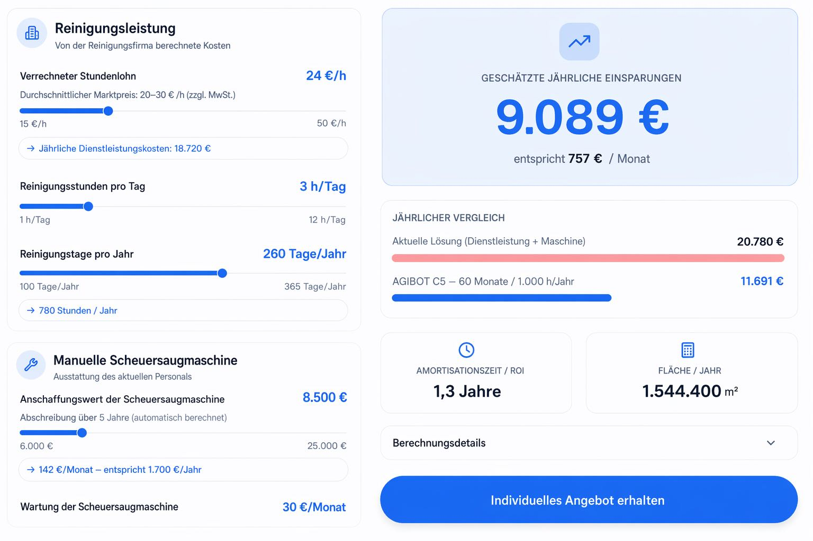

Wirtschaftlichkeit auf einen Blick
Präzision und Effizienz stehen bei uns an erster Stelle. Mit dem C5 sparen Sie Zeit und Arbeitskosten und senken zugleich den Verbrauch von Wasser und Reinigungsmitteln – eine Beispielrechnung gegenüber der manuellen Reinigung:

Beispielrechnung: jährlicher Kostenvergleich – manuelle Reinigung vs. C5 (60 Monate, 1.000 h/Jahr)
Über FMC3 Robotics
FMC3 steht für die Zukunft der Robotik. Von unserem Standort in Ingolstadt aus bieten wir Ihnen die neuesten und innovativsten Technologien an. Unser Unternehmen wurde im Oktober 2025 von Herrn Prof. Dr. Bjoern Giesler, Herrn Dr. Wang Cheng und Herrn Dr. David Fan gemeinsam mit dem Ziel gegründet, Europa mit moderner Robotiktechnologie zu versorgen.
Seitdem haben wir bereits zahlreiche Verträge mit Kunden in Deutschland und Europa abgeschlossen. Darüber hinaus versorgen wir unsere Kunden mit Begrüßungs- und Lieferrobotern. Unsere Ingenieure in Shanghai arbeiten derzeit an einem humanoiden Roboter; außerdem starten wir eine Zusammenarbeit im Bereich der Sicherheitsroboterhunde.